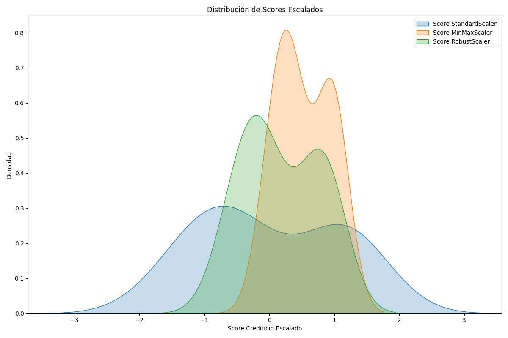

Dashboard de Procesamiento de Datos
Este dashboard resume el procesamiento de variables categóricas y numéricas utilizando técnicas modernas.
📊 Distribución de Scores Escalados

📄 Resumen de Técnicas Aplicadas
| Tecnica |
Media |
Desviación Estándar |
| Label Encoding |
5.779000e+02 |
195.704681 |
| One Hot Encoding |
3.333333e-01 |
0.477243 |
| Variables Dummies |
3.333333e-01 |
0.477243 |
| StandardScaler |
1.110223e-16 |
1.054093 |
| MinMaxScaler |
5.263265e-01 |
0.399397 |
| RobustScaler |
1.805981e-01 |
0.570984 |
| PowerTransformer |
1.254552e-15 |
1.054093 |
| Normalizer |
2.633941e-01 |
0.003450 |
📌 Interpretación Automática
📌 Interpretación Automática
- Label Encoding: asigna números enteros. Útil para categorías ordinales.
- One Hot Encoding: codificación binaria sin orden. Útil para variables nominales.
- Variables Dummies: similar a One Hot Encoding, usando pandas.
- StandardScaler: centrado en 0, desviación ≈1. Ideal para regresión.
- MinMaxScaler: escala [0-1]. Útil para redes neuronales.
- RobustScaler: resistente a outliers. Útil en presencia de valores extremos.
- PowerTransformer: mejora la normalidad de la variable. (Box-Cox/Yeo-Johnson)
- Normalizer: vector con norma 1. Útil para algoritmos basados en distancia.